Pengbin Tang
Wolfgang-Pauli-Strasse 27 |
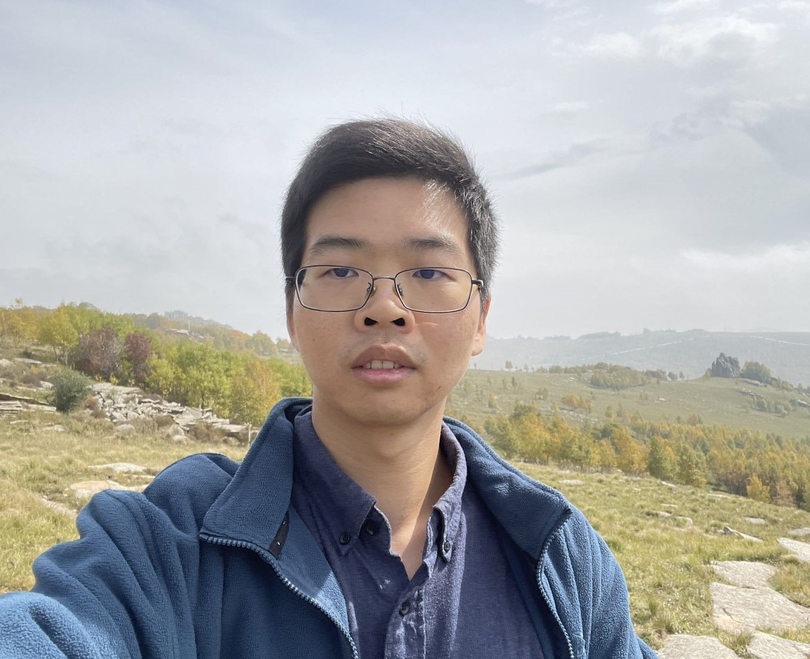 |
I am a Postdocoral Researcher at ETH Zurich in Computational Design Lab headed by Prof. Bernd Bickel. I was a research assistant at Shandong University, working with Prof. Lin Lu and Prof. Haisen Zhao.
I obtained my PhD in Computer Science from Université de Montréal under supervision of Prof. Bernhard Thomaszewski, focusing on the modeling and design of nonlinear mechanical systems and materials.
My research interests lie at the intersection of computer graphics, mechanical engineering, material science, robotics, and digital fabrication. My primary focus is on designing nonlinear materials, structures, and systems that undergo large deformation and exhibit nonlinear behavior, which are crucial for achieving multifunctionality and sustainability across diverse applications. To achieve this, the core of my research is utilizing physical simulation with optimization algorithms as well as machine learning techniques to drive innovation in the design of intelligent, self-responsive materials, structures, and systems with complex forms and functions.
| 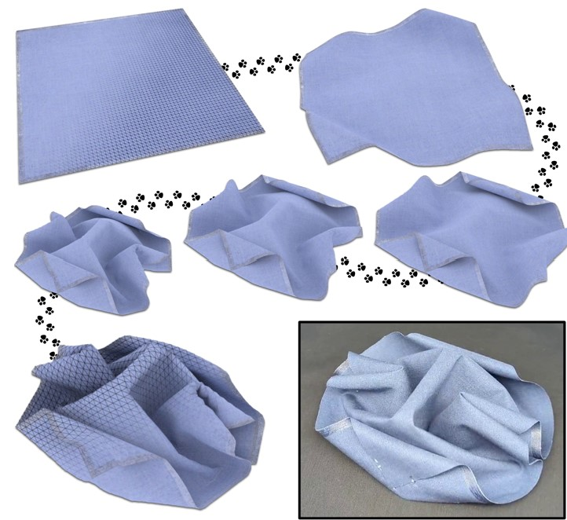 |
Modal Folding: Discovering Smooth Folding Patterns for Sheet Materials using Strain-Space Modes
Pengbin Tang, Ronan Hinchet, Roi Poranne，Bernhard Thomaszewski, Stelian Coros. Proc. ACM SIGGRAPH 2024. [ArXiv][Paper][Video][Project Page] |
| 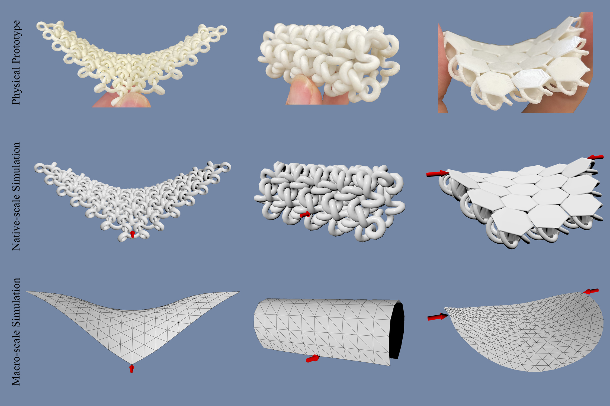 |
Beyond Chainmail: Computational Modeling of Discrete Interlocking Materials
Pengbin Tang, Stelian Coros, Bernhard Thomaszewski. ACM Transactions on Graphics (Proc. ACM SIGGRAPH 2023), 42(4). [Paper][Video][Project Page] |
| 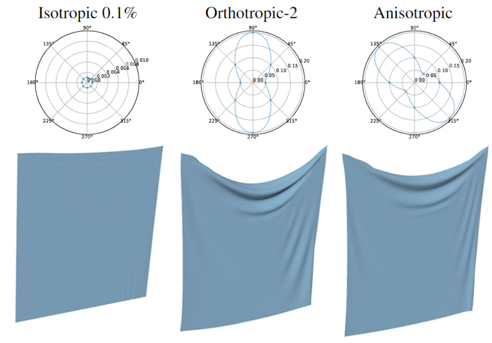 |
A Second Order Cone Programming Approach for Simulating Biphasic Materials
Pengbin Tang, Stelian Coros, Bernhard Thomaszewski. Computer Graphics Forum (Proc. of the ACM SIGGRAPH / Eurographics Symposium on Computer Animation(SCA) 2022). |
| 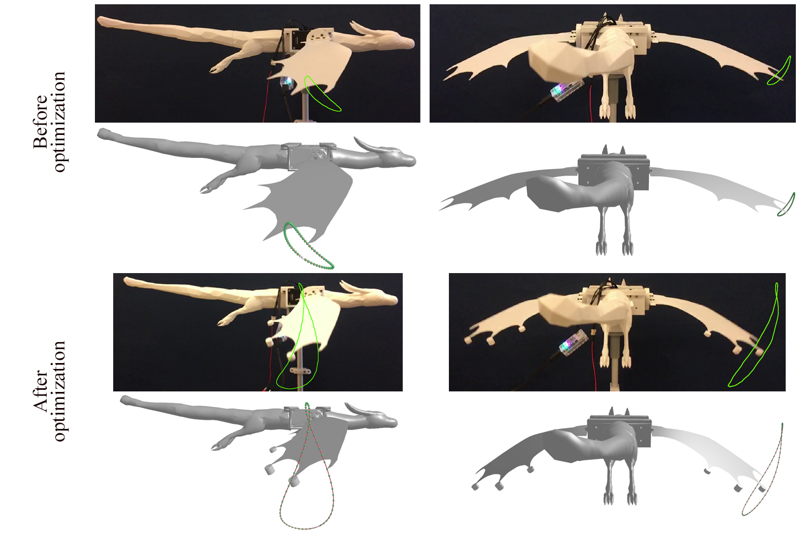 |
A Harmonic Balance Approach for Designing Compliant Mechanical Systems with Nonlinear Periodic Motions
Pengbin Tang, Jonas Zehnder, Stelian Coros, Bernhard Thomaszewski. ACM Transactions on Graphics (Proc. ACM SIGGRAPH Asia 2020), 39(6). [Paper][Video][Project Page] |
| 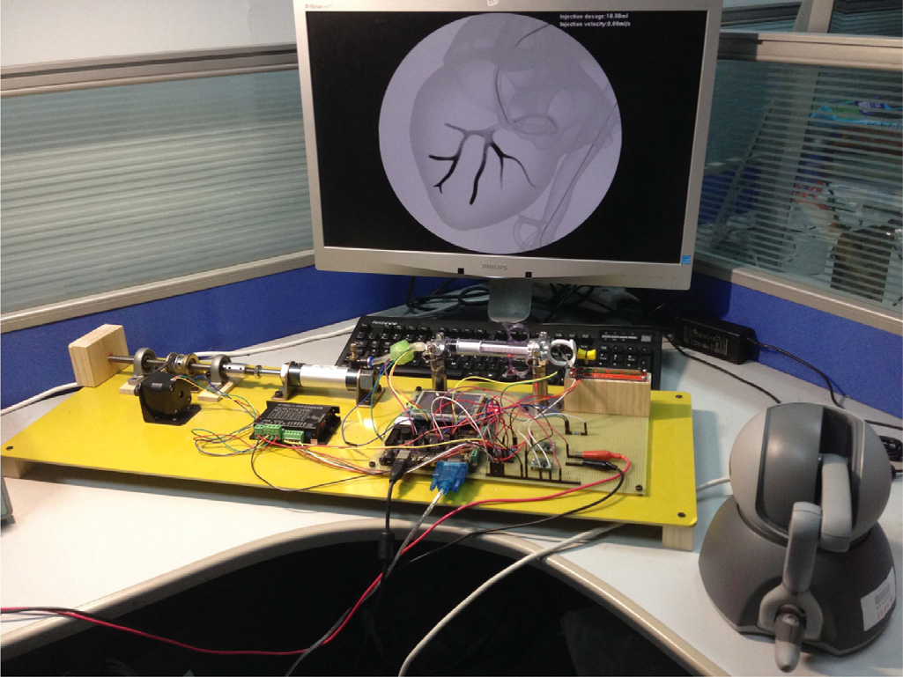 |
New Haptic Syringe Device for Virtual Angiography Training
Dongjin Huang, Pengbin Tang, Xianglong Wang, Taoruan Wan, Wen Tang. Computers & Graphics (Proc. CAD/Graphics 2019). Volume 80, May 2019, Pages 97-103. [paper] |
| 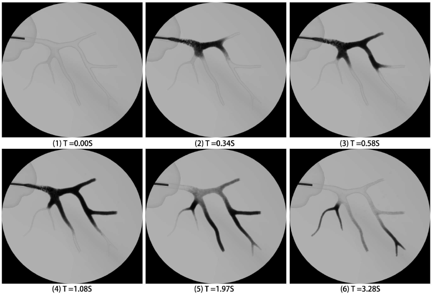 |
Angiography Simulation and Planning Using a Multi-Fluid Approach
Dongjin Huang, Pengbin Tang, Wen Tang, Taoruan Wan. Appl. Sci. Volume 9, January 2019, Pages 379-396. [paper] |
| 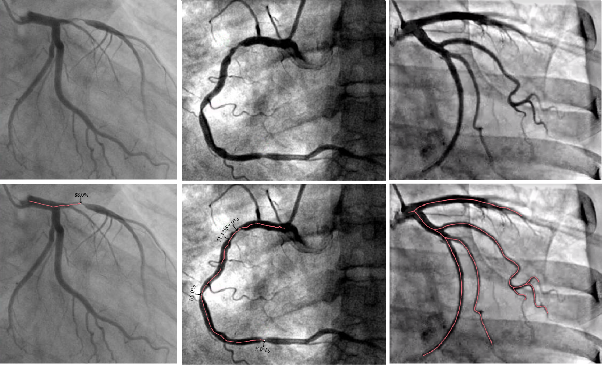 |
Computer-Assisted Path Planning for Minimally Invasive Vascular Surgery
Dongjin Huang, Pengbin Tang, Yin Wang, Hejuan Li, Wen Tang, Youdong Ding.
Chinese Journal of Electronics (Proc. CAD/Graphics 2017). Volume 27, November 2018, Pages 1241-1249, 2017.
[paper] |
| 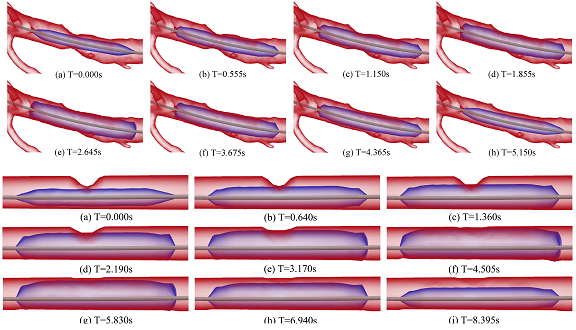 |
Position Based Balloon Angioplasty
Pengbin Tang, Dongjin Huang, Yin Wang, Ruobin Gong, Wen Tang, Youdong Ding.
The 15th ACM SIGGRAPH Conference on Virtual-Reality Continuum and Its Applications in Industry (VRCAI) , 2016.
[paper] |
| 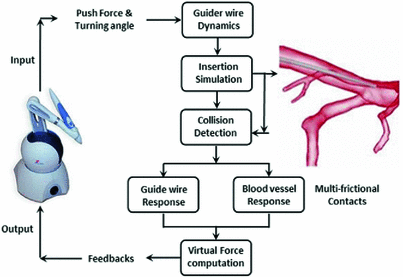 |
Modeling and Simulation of Multi-frictional Interaction Between Guidewire and Vasculature
Dongjin Huang, Yin Wang, Pengbin Tang, Zhifeng Xie, Wen Tang, Youdong Ding.
International Conference on Image and Graphics (ICIG), 2015.
[paper] |
| 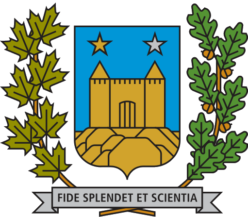 |
Computational Modeling and Design of Nonlinear Mechanical Systems and Materials Pengbin Tang PhD Thesis, Université de Montréal, 2023. |
Hobbies: Travel, Badminton, Magic, PC Games.
Last Updated by Pengbin Tang: May 7, 2024